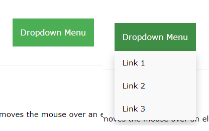

Další ukázky dropdown
absolute a relative
bez nich
Co dělá z-index
Poznámky
- Proč se používá provázání rodič dítě v .css?
Úkoly
- Vytvořit dropdown button v tomto stylu:

Nápověda je v dalších zdrojích.
Pokus o menu
Vykradl jsem w3schools a trochu upravil a stvořil jsem toto
Úkoly
- Skryj nejvíce zanořený seznam a zobraz ho jen po najetí myší
!!!!!!Oukej tak to je dost nepřehledný, takže asi radši ne. !!!!!!!
Odkazy
Předchozí část
hlavní stránka
Další část
Další zdroje